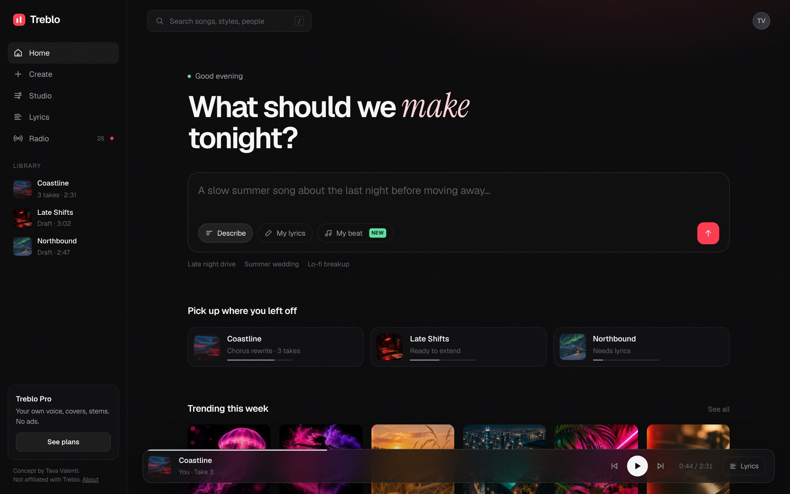
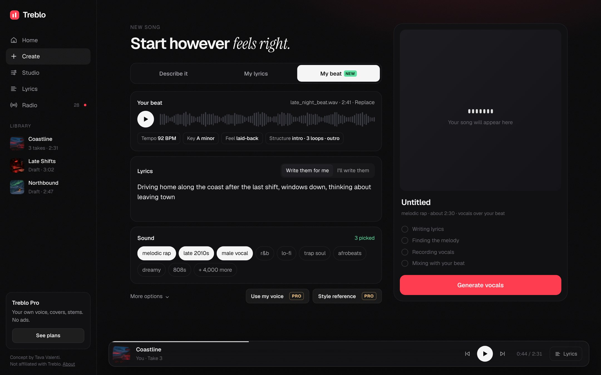
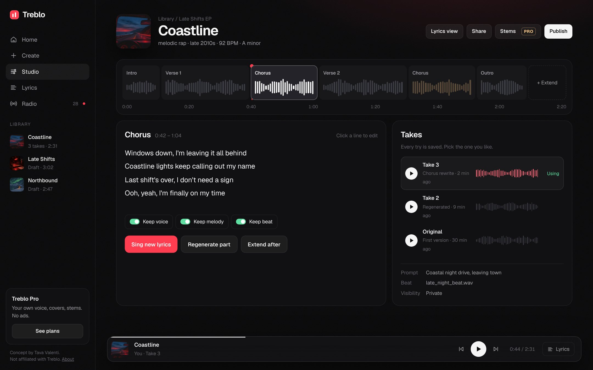
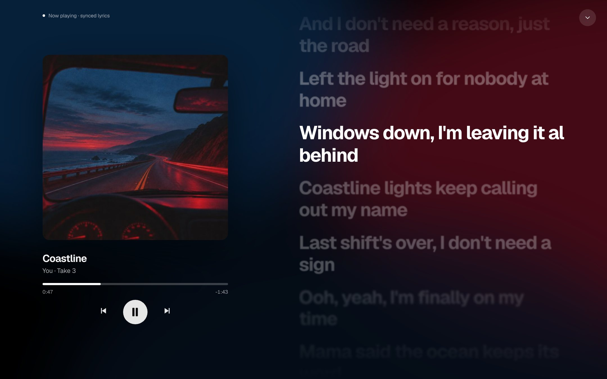
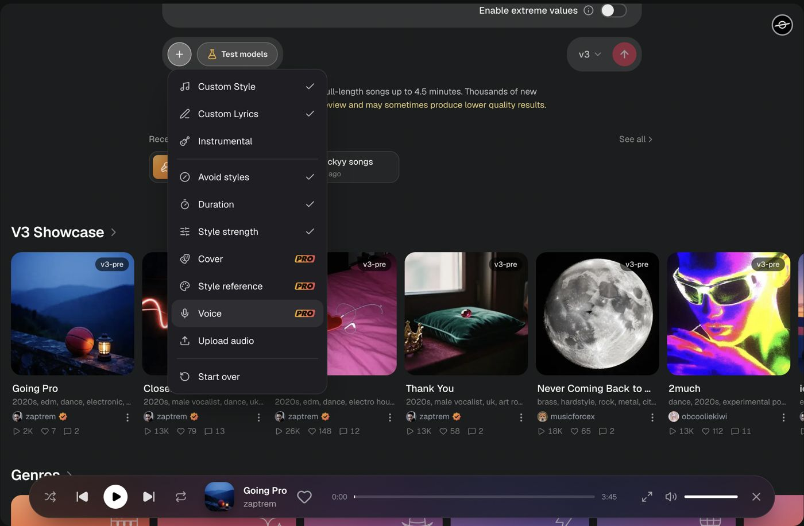
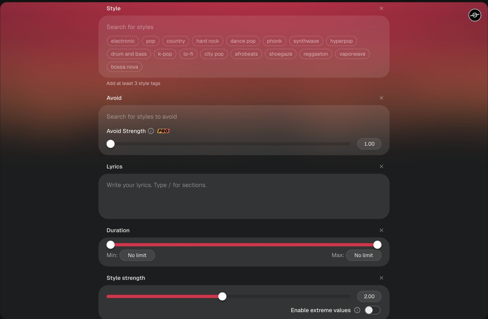

Start from your own beat, generate, change one line of the chorus without losing the singer, then watch the lyrics sync. Everything in the prototype works on desktop and phone.
Each one came from something that tripped me up as a user, or from what people say in your App Store reviews.
One box: what do you want to make? Pick whether you're describing it, bringing lyrics, or bringing a beat, and go. Your drafts and what's trending sit underneath.
A lot of people already have a beat. Upload it, Treblo reads the tempo and key, writes lyrics or uses yours, and sings on top. A live preview on the right shows what's coming while it works.

Click a section on the timeline, change the actual lyrics, keep the voice, melody and beat, and press Sing. Every try is saved as a take you can switch back to.

A full-screen view where each line lights up as it's sung and the background takes its colors from the cover. It's the moment people screenshot and share.



I'm a designer in San Diego. I also built my own app called Veloura, a prompt-to-MIDI generator that connects to FL Studio, so I've spent a lot of time thinking about how people make music with prompts.
I'm not asking for anything for this. I just think Treblo is sick, and if there's ever anything I could help with, design or front-end, I'd honestly be honored. I'm trying to build experience and meet people building in this space.